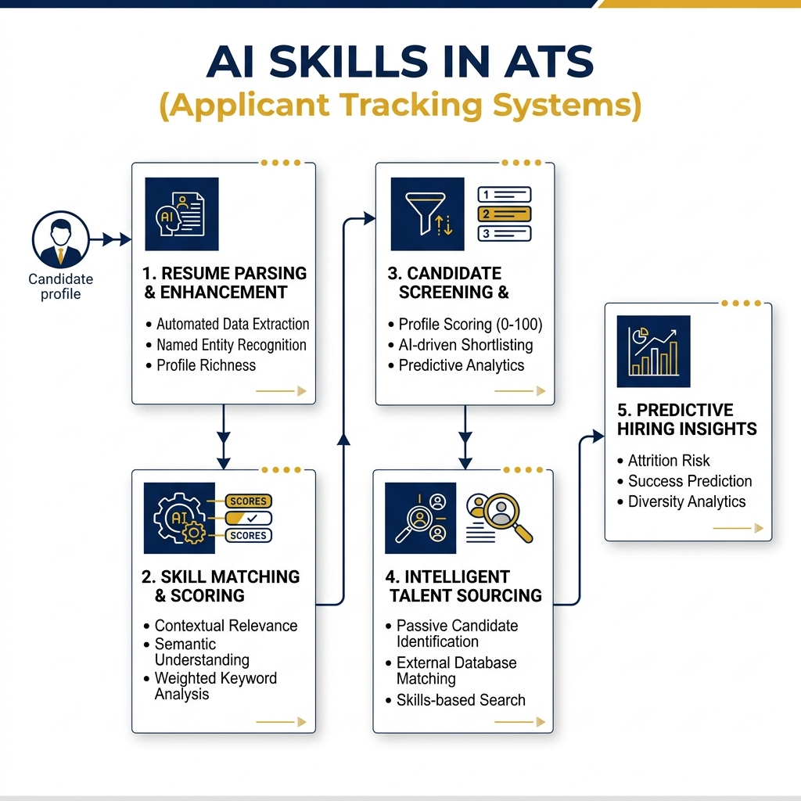
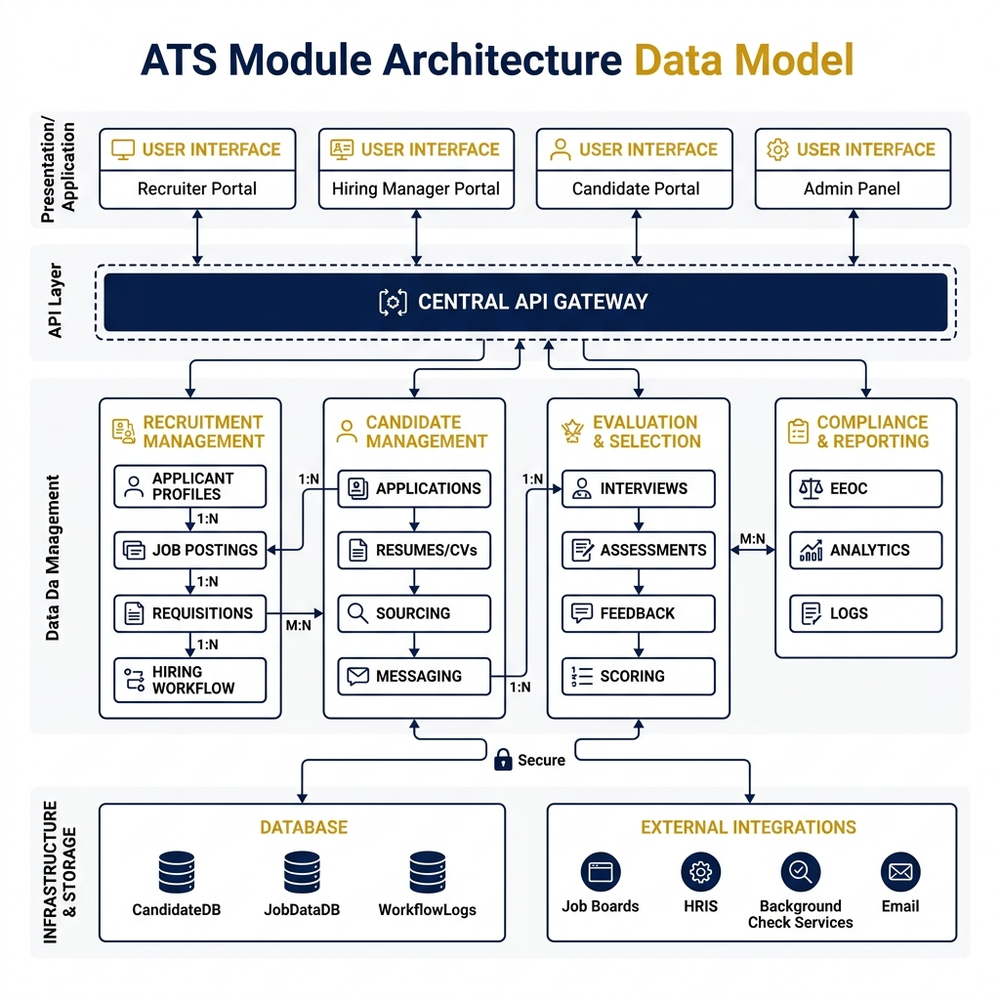
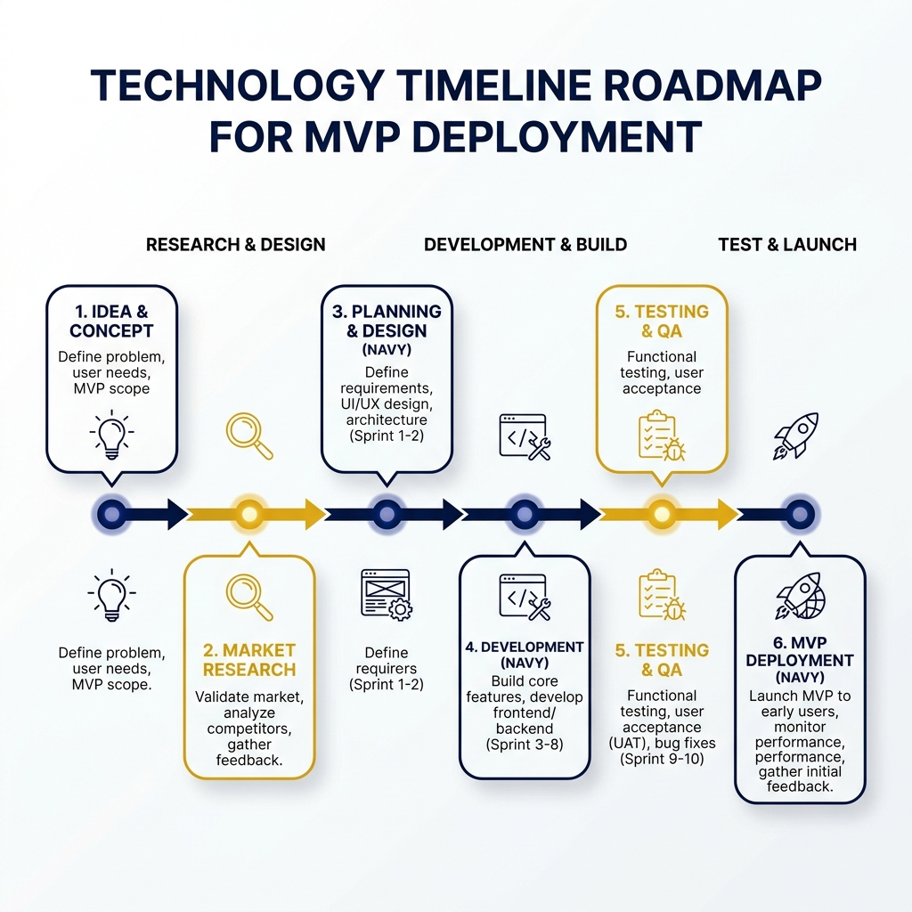

ATS Agent Skills & Superpowers
Agent Skills & Speckit & Superpowers
Hiện thực hóa tự động hóa ATS từ khâu thiết kế dữ liệu đến khâu thực thi.
PHẦN 1
Tự Động Hóa Với AI Skills
Ứng dụng AI Agent vào ATS để thay thế hoàn toàn các tác vụ nhập liệu thủ công.
Tập trung vào 2 kỹ năng cốt lõi: Bóc tách CV và Đối sánh JD.
AI SKILLS IN ATS
Kiến Trúc Tổng Quan AI Skills
Sử dụng Agent Skills để biến tài liệu thô thành dữ liệu cấu trúc phục vụ ATS.
- cv-to-candidate-record: Chuyển đổi CV gốc (PDF/Docx/Image) thành chuẩn JSON.
- candidate-jd-matcher: Phân tích Semantic Match giữa Candidate JSON và Text JD.

CV TO CANDIDATE RECORD
Flow Kỹ Thuật: cv-to-candidate-record
Đọc CV
PDF, DOCX, Ảnh, Text
Đối Chiếu
Schema JSON mục tiêu
Trích Xuất
Phân loại dữ liệu thiếu
Validate
AI Auto-fix nếu lỗi
Trả JSON
Sẵn sàng lưu ATS
SCHEMA
Dữ Liệu Đầu Ra: cv-to-candidate-record
CV Gốc (Unstructured)
Văn bản thô không thể query.
"Kinh nghiệm làm việc:
2020-2023: Dev tại ABC
- Làm backend Node.js
- Quản lý database"
...JSON Schema (Structured)
Phân vùng rõ ràng, dễ dàng tạo Talent Pool.
{
"candidate": {
"skills": ["Node.js", "Database"],
"experience_years": 3,
"missing_fields": ["phone", "email"]
}
}CANDIDATE JD MATCHER
Flow Kỹ Thuật: candidate-jd-matcher
Nhận Input
Candidate (JSON) + JD (Text)
So Sánh
Kỹ năng, Kinh nghiệm
Chấm Điểm
Score 0-100 & Khuyến nghị
Tổng Hợp
Lý do: Điểm mạnh/Yếu
Trả JSON
Kết quả đối sánh
PHẦN 2
Thiết Kế Dữ Liệu Với Spec Kit
Chuyển đổi ý tưởng nghiệp vụ thành Artifact kỹ thuật rõ ràng.
Quy trình bắt buộc trước khi cấp phép cho AI viết dòng code đầu tiên.
QUY TRÌNH
Quy Trình 6 Bước Của Spec Kit
Constitution
Bảo mật
Specify
Nghiệm thu
Clarify
Ngoại lệ
Plan
Kiến trúc
Tasks
Phân rã
Analyze
Check chéo
SPEC KIT: CONSTITUTION
Thiết Lập Constitution Cho Upload CV
Mọi kiến trúc theo sau phải bám sát bộ luật nền tảng của hệ thống ATS.
Bảo vệ dữ liệu ứng viên. Phân quyền rõ ràng HR vs Hiring Manager.
HR có quyền kiểm tra và sửa thông tin trích xuất từ CV.
Dữ liệu ứng viên phải có cấu trúc để query và tạo talent pool.
Khả năng truy vết (audit log) mọi thay đổi quan trọng.
SPEC KIT: SPECIFY
Specify: Đặc Tả Nghiệp Vụ
Chốt yêu cầu đầu vào (User Story & Acceptance Criteria) một cách rành mạch.
Acceptance Criteria (Tiêu chí nghiệm thu):
- HR có thể tải CV lên và hệ thống tự trích xuất thông tin.
- HR có thể xem và chỉnh sửa dữ liệu trước khi lưu.
- Hồ sơ tự động liên kết với tin tuyển dụng (Job).
- Trường dữ liệu hỏng hoặc không đọc được phải để trống (không điền bừa).
- Bắt buộc lưu CV gốc kèm theo hồ sơ JSON.
SPEC KIT: CLARIFY
Clarify: Xử Lý Các Biến Số Kỹ Thuật
Nhận diện rủi ro và đóng băng các luồng ngoại lệ trước khi thiết kế.
- Hỗ trợ file: PDF, DOCX hay ảnh? Dung lượng tối đa bao nhiêu?
- Bắt buộc: Email và SĐT có bắt buộc không?
- Trùng lặp: Cập nhật hồ sơ cũ hay tạo Application mới?
- Ngoại lệ: Phản hồi của hệ thống khi parse thất bại hoàn toàn?
Tại sao cần Clarify?
Tránh tình trạng Dev/Agent phải đoán mò logic khi code các edge cases, gây ra bug tiềm ẩn trong tương lai.
SPEC KIT: PLAN
Plan: Data Model & Kiến Trúc
Các quyết định kiến trúc cốt lõi:
- Tách Model: Tách riêng Candidate (thông tin tĩnh) và Application (thông tin theo Job).
- Storage: Cơ chế lưu file CV vào Object Storage và sinh presigned URL.
- Duplicate Check: Cơ chế kiểm tra ứng viên trùng qua SĐT/Email.
- Error Handling: API trả về trạng thái parse lỗi để UI báo cho HR.

SPEC KIT: TASKS
Tasks: Phân Rã Công Việc Kỹ Thuật
9 Tasks độc lập sẵn sàng giao cho Agent hoặc Developer.
| Data & Backend | UI & Logic | Validation & Link |
|---|---|---|
| 1. Xây schema Candidate | 3. UI Upload CV | 6. API Validation |
| 2. Xây schema Application | 4. Logic trích xuất CV | 7. Liên kết ứng viên với Job |
| 8. Xử lý hồ sơ trùng | 5. UI Review thông tin | 9. Test Acceptance Criteria |
SPEC KIT: ANALYZE
Analyze: Rà Soát Chéo
Spec (Yêu cầu)
- HR được chỉnh sửa dữ liệu trước khi lưu.
- 1 ứng viên nộp nhiều Job.
- Báo lỗi nếu parse hỏng.
Plan/Tasks (Thiết kế)
- Task 5: Có UI Review để sửa.
- Data Model tách Candidate & Application.
- Có Task xử lý ngoại lệ parse hỏng chưa? (Bổ sung)
PHẦN 3
Kỷ Luật Thực Thi Của Superpowers
Thiết lập Kỷ luật cứng rắn cho AI Agent qua 7 bước vận hành.
Kiểm soát chặt chẽ cách AI hành động: Từ thiết kế, cô lập môi trường, code, review đến nghiệm thu.
QUY TRÌNH
Flow Kỷ Luật AI: 7 Bước Superpowers
Brainstorming
Validate luồng
Git Worktrees
Cô lập môi trường
Writing Plans
Chia task nhỏ
Subagent
Code đa nhiệm
TDD
Red-Green-Refactor
Code Review
Chặn lỗi critical
Finishing Branch
Verify & Merge
SUPERPOWERS (BƯỚC 1 & 3)
Thiết Kế & Lên Kế Hoạch (Brainstorm & Plan)
Ép buộc AI phân tích các edge cases kỹ thuật thay vì đâm đầu vào code ngay.
- Bước 1 (Brainstorming): Dùng ở giai đoạn Clarify & Plan để tìm ra các lỗi thiết kế tiềm ẩn, khám phá giải pháp thay thế.
- Bước 3 (Writing Plans): Bóc tách luồng Upload CV thành 9 tasks kỹ thuật chi tiết (mỗi task chỉ 2-5 phút code).
"Agent phải hoàn thành thiết kế và được duyệt thì mới được phép viết dòng code đầu tiên."
SUPERPOWERS (BƯỚC 2 & 5)
Git Worktrees & TDD
Bước 2: Môi Trường
- Sử dụng using-git-worktrees để tạo một nhánh làm việc biệt lập (Isolated workspace).
- Đảm bảo mọi thay đổi (cài đặt, chạy thử) không ảnh hưởng tới nhánh chính.
Bước 5: Kỷ Luật TDD
- Sử dụng test-driven-development (Red-Green-Refactor).
- Viết test case báo đỏ $\rightarrow$ Code chức năng $\rightarrow$ Pass xanh $\rightarrow$ Commit. Xóa code viết trước khi có test.
SUPERPOWERS (BƯỚC 4 & XỬ LÝ LỖI)
Thực Thi Đa Nhiệm (Subagent) & Debugging
Tối ưu hiệu suất lập trình bằng cách dispatch các luồng task song song.
Tính năng Upload CV
Code UI Upload
Làm giao diện kéo thả.
Code Logic Parse
Gọi kỹ năng bóc tách CV. Nếu lỗi $\rightarrow$ Dùng Systematic Debug phân tích log.
SUPERPOWERS (BƯỚC 6)
Rà Soát Code (Requesting Code Review)
Kiểm soát chéo các dòng code trước khi chuyển sang task tiếp theo.
Review lại code xem đã khớp chính xác với /speckit.plan chưa.
Chặn đứng tiến trình nếu phát hiện lỗi ở mức độ Critical. Yêu cầu Subagent sửa lại.
Không cho phép các dòng code tạm bợ (hack/workaround) được merge.
SUPERPOWERS (BƯỚC 7)
Nghiệm Thu (Verification & Finishing)
Mọi code phải có bằng chứng chạy thật, không báo "Done" khi chưa Pass Test.
- Verify Before Done: Chạy lệnh test chứng minh hệ thống đã lưu CV gốc thành công vào Storage và bắt được cảnh báo.
- Finishing Branch: Kiểm tra lại toàn bộ baseline test. Đề xuất Merge/Tạo PR.
- Dọn Dẹp: Cleanup toàn bộ worktree biệt lập để trả lại môi trường sạch.
ROADMAP
Lộ Trình Triển Khai MVP Tính Năng Upload CV
Quy Trình 9 Bước
1. Chọn MVP feature
2. Viết specification
3. Review với stakeholder
4. Clarify (Làm rõ)
5. Plan (Thiết kế + Brainstorming)
6. Chia Tasks
7. Analyze (Rà soát)
8. Code (Subagent + TDD + Review)
9. Nghiệm thu (Verification)

TỔNG KẾT
Tổng Kết Kỹ Thuật
Hệ thống kiểm soát 2 lớp đảm bảo chất lượng phần mềm cao nhất.
Đảm bảo "Đúng kiến trúc, Không sai luồng". Chống thiết kế lệch yêu cầu.
Đảm bảo "Code chuẩn 7 bước". Ép buộc Agent thực thi có kỷ luật, không lỏng lẻo.
Tiến hành chốt sơ đồ Data Model (Candidate/Application) để bắt tay vào Code tính năng Upload CV.